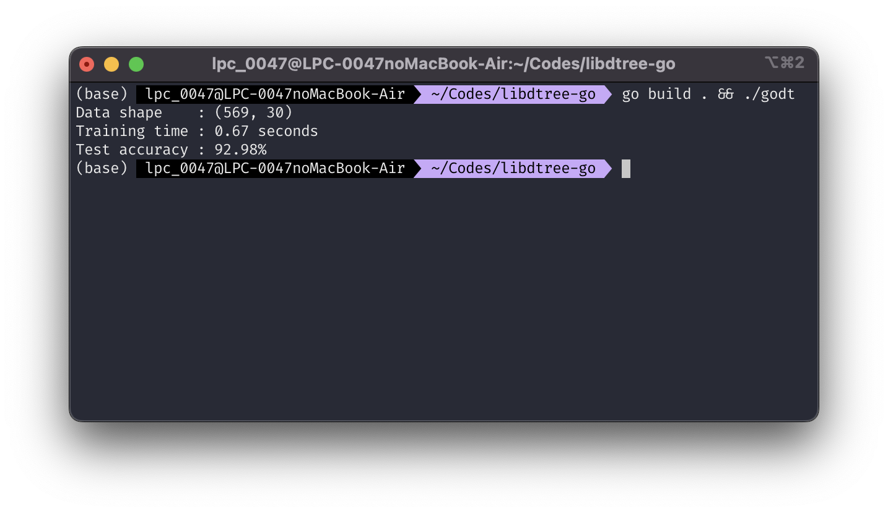

I've been recently:
For the sake of recreational programming (and refreshing my decision tree knowledge), I decided to implement a decision tree classifier library in pure C. Here's the list of requirements:
libdtreeThe so-called libdtree single-header-file only C library is already implemented and it can be accessed here.
To avoid overcomplication, only 4 APIs are exposed:
dtree_fit and dtree_fit_with_param to fit a tree classifierdtree_predict and dtree_predict_single to make predictions in bulk or per sample respectivelyUsing it in C is pretty straightforward. For example, this is a program to grow a decision tree classifier on XOR dataset.
#include <stdio.h>
#include "libdtree.h"
int main()
{
// features
float data[8] = {
1, 1,
0, 1,
1, 0,
0, 0};
// targets
float target[4] = {0, 1, 1, 0};
int nrow = 4;
int ncol = 2;
Tree *tree = dtree_fit(data, target, ncol, nrow);
/*
make bulk predictions on the original data (which is expected to
reproduce the original target)
*/
// allocate prediction output buffer
float predictions[nrow];
dtree_predict(tree, data, ncol, nrow, predictions);
for (int i = 0; i < nrow; i++)
{
printf("result %d: %.2f\n", i, predictions[i]);
}
/*
make a single class prediction
*/
float test[2] = {1, 0};
float class = dtree_predict_single(tree, test);
printf("result single: %.2f\n", class); // should print 1.00
dtree_free(tree);
return 0;
}
Commonly, such kind of libraries are designed to be used as a low-level tool. Preprocessing, IO, postprocessing are the responsibility of the user. The libraries just do the number crunching.
For example, dtree only accepts numerical values, grows tree, and make predictions.
No data loader, no model serialization.
I think this is indeed, their sole purpose: to be used as it is by the users like a spartan; or to wrapped in other programming languages. In fact, C is loved by the other languages since it is easy to interface with!
libdtree in golangLittle did I know that it is really easy to include C header file as it is (!). What we need to do is just:
package packagename
// #include <stdio.h>
// #include "libdtree.h"
import "C"
// ... rest of your code
Now we can access all defined symbols in the imported headers.
For example, if you have this function in someheader.h
void greet() {
printf("Hello world!\n");
}
you'll be able to access it in go, for example as follows.
package main
// #include "someheader.h"
import "C"
func main() {
C.greet()
}
The rest that I need to care about is the type compatibility.
The libdtree accepts arrays as a float pointer, but we cannot directly use golang's []float32 slice.
First of all, I need to prepare helper functions to convert golang slice to C float pointer, and vice versa.
Here's how I did it:
// converting []float32 to *C.float
func FSliceToCFloatPtr(slice []float32) *C.float {
return (*C.float)(&slice[0])
}
// converting *C.float to []float32
func CFloatPtrToFSlice(arr *C.float, len int) []float32 {
unsafePtr := unsafe.Pointer(arr)
// lol even I don't know what I wrote
arrPtr := (*[1<<32 - 1]C.float)(unsafePtr)
// slice of type []C.float that we need to convert to slice of type
// []float32
cSlice := arrPtr[:len:len]
slice := []float32{}
for i := range cSlice {
slice = append(slice, float32(cSlice[i]))
}
return slice
}
Then I define a struct for the decision tree classifier.
Scikit-learn is an example of the outstanding ML library.
I will follow their estimator class design.
Accordingly, the struct will implement two methods: fit(x, y) and predict(x).
// Our main decision tree struct
type DecisionTreeClassifier struct {
param C.TreeParam
root *C.Tree
}
// Creating decision tree with specified parameters
func NewDecisionTreeClassifier(
maxDepth int, minSampleSplit int,
) *DecisionTreeClassifier {
return &DecisionTreeClassifier{
param: C.TreeParam{
maxdepth: C.int(maxDepth),
min_sample_split: C.int(minSampleSplit),
},
}
}
// Creating decision tree with the default parameters
func NewDefaultDecisionTreeClassifier() *DecisionTreeClassifier {
return NewDecisionTreeClassifier(5, 1)
}
// fit takes x as a 2d slice just to make it nicer
func (dt *DecisionTreeClassifier) Fit(
x [][]float32, y []float32,
) *DecisionTreeClassifier {
// libdtree uses 1d flatten array, so we flatten `x`
xFlat := []float32{}
for _, row := range x {
xFlat = append(xFlat, row...)
}
nRows := len(x)
nCols := len(x[0])
// Here we actually invoke the training API from libdtree. The resulted
// `Tree` is assigned to `dt.root`.
dt.root = C.dtree_grow_with_param(
FSliceToCFloatPtr(xFlat),
FSliceToCFloatPtr(y),
C.int(nCols),
C.int(nRows),
dt.param,
)
return dt
}
func (dt *DecisionTreeClassifier) Predict(x [][]float32) []float32 {
xFlat := []float32{}
for _, row := range x {
xFlat = append(xFlat, row...)
}
nRows := len(x)
nCols := len(x[0])
// Prepare a buffer to hold prediction result
yPred := make([]float32, nRows)
C.dtree_predict(
dt.root,
FSliceToCFloatPtr(xFlat),
C.int(nCols),
C.int(nRows),
FSliceToCFloatPtr(yPred),
)
return yPred
}
Now we proceed with the driver code. The dataset that I used is Wisconsin breast cancer dataset. I also prepared data loader function and model accuracy calculation function.
I prepared the cleaned version (removing ID and converting all values to numerical) here.
package main
// #cgo CFLAGS: -O3
// #include "../libdtree/libdtree.h"
import "C"
import (
"encoding/csv"
"fmt"
"os"
"strconv"
"time"
"unsafe"
)
// ...
// ...
// ... decision tree implementation codes here
// ...
// ...
// Read data from a CSV file. The data will be loaded as features and targets
// for training ML models. We assume all data are already in a numerical format.
// This function assumes that there is only a single target column, and it is
// given as an argument.
func ReadNumericCSV(path string, idxTarget int) ([][]float32, []float32) {
f, err := os.Open(path)
if err != nil {
panic(err)
}
defer f.Close()
csv, err := csv.NewReader(f).ReadAll()
if err != nil {
panic(err)
}
if len(csv) == 0 {
panic("empty dataset")
}
nRows := len(csv)
nCols := len(csv[0])
data := [][]float32{}
target := []float32{}
for i := 0; i < nRows; i += 1 {
row := []float32{}
for j := 0; j < nCols; j += 1 {
if j != idxTarget {
v, err := strconv.ParseFloat(csv[i][j], 32)
if err != nil {
panic(err)
}
row = append(row, float32(v))
}
}
data = append(data, row)
v, err := strconv.ParseFloat(csv[i][idxTarget], 32)
if err != nil {
panic(err)
}
target = append(target, float32(v))
}
return data, target
}
// Simply calculate the count of correct predictions divided by the total
// number of samples.
func AccuracyScore(predicted []float32, expected []float32) float32 {
res := 0.0
for i := 0; i < len(predicted); i += 1 {
if expected[i] == predicted[i] {
res += 1
}
}
return float32(res / float64(len(predicted)))
}
// Mimicking scikit-learn's train_test_split
func TrainTestSplit(
x [][]float32, y []float32, trainSize float32, shuffle bool,
) ([][]float32, [][]float32, []float32, []float32) {
indices := []int{}
for i := 0; i < len(x); i += 1 {
indices = append(indices, i)
}
if shuffle {
rand.Seed(time.Now().UnixNano())
rand.Shuffle(
len(indices), func(i, j int) { indices[i], indices[j] = indices[j], indices[i] },
)
}
xTrain := [][]float32{}
xTest := [][]float32{}
yTrain := []float32{}
yTest := []float32{}
nTrain := int(trainSize * float32(len(x)))
for i := 0; i < len(x); i += 1 {
if i < nTrain {
xTrain = append(xTrain, x[i])
yTrain = append(yTrain, y[i])
} else {
xTest = append(xTest, x[i])
yTest = append(yTest, y[i])
}
}
return xTrain, xTest, yTrain, yTest
}
func main() {
data, target := ReadNumericCSV("cancer_clean.csv", 0)
xTrain, xTest, yTrain, yTest := TrainTestSplit(data, target, 0.8, true)
// track time before training
then := time.Now()
clf := NewDefaultDecisionTreeClassifier()
clf.Fit(xTrain, yTrain)
// get the training time
processingTime := (time.Since(then))
pred := clf.Predict(xTest)
fmt.Printf("Data shape : (%d, %d)\n", len(data), len(data[0]))
fmt.Printf("Training time : %.2f seconds\n", processingTime.Seconds())
fmt.Printf("Test accuracy : %.2f%%\n", AccuracyScore(pred, yTest)*100)
}
When I run the code, this is the result.

For an unoptimized libdtree, this is Not bad, eh?
■────────────────────────────────────────────────────────────────────■ │ │ │ Copyright 2014-2024 Aria Ghora Prabono. Any and all opinions │ │ listed here are personal unless stated otherwise. │ │ │ ■────────────────────────────────────────────────────────────────────■